Learning Goals
At the end of this Tutorial you will be able to:
- Sign up to the free Google Analytics service.
- Create the Google Analytics Tracking Code for a particular website.
- Copy-and-paste the Tracking Code into a web page or pages.
- Test that Google Analytics is tracking visits to a web page.
- View a Tracking Code you created previously in Google Analytics.
- Understand these Google Analytics terms: Account, Property and View.
- Share Google Analytics web traffic data with others, such as your work colleagues and clients.
You will need a Gmail or other Google Account to complete this Tutorial.
About Google Analytics
Google Analytics is an online service used by some 27 million websites around the world to monitor their user traffic.
- For websites with over 10 million visits per month, there is a paid version named Google Analytics 360 that costs $150,000 annually.
- This Tutorial will focus only on the free or ‘standard’ version of Google Analytics.
To use Google Analytics on your website, you:
- Sign in to Google Analytics with the same email and password you use to access Gmail, YouTube or other Google service.
- Enter the address of the website you want to track – for example: https://marysmith.github.io
- Google Analytics then generates a Tracking Code that contains a Tracking ID that is unique to your website.
- Paste the Tracking Code into all the pages of your website you want to monitor.
The Google Tracking Code is in the form of a few lines (a snippet) of JavaScript code. Typically, the Google Analytics Tracking Code is placed just before the closing </head> tag of a web page.
Information collected by Google Analytics
Google Analytics provides you with two types of data about the traffic to your website:
- A little about what is happening now: You can see a summary of so-called real-time data, such as your number of current visitors, their geographic location and which pages they are viewing.
- A lot about what happened until the day before yesterday: You can view more in-depth details on all previous activity on your website. This includes anonymised statistical data on your website visitors, such as their age range, gender and lifestyle interests. However, the free version of Google Analytics delays the display of historical data by 24-48 hours. This means that you won’t see any web traffic from yesterday and often from the day before either. So, do not be alarmed if it looks like the number of website visitors over the past two days has dropped to zero. It is just that Google Analytics is not yet displaying that data.
Your Gmail/Google Account
Do you already use one or more of Google’s online services, such as Gmail, Google Drive, YouTube, Google Maps or Google Play? If you do, you will know that you can sign in to any of these services using the same email address and password. This email/password combination is known as your Google Account.
Because Gmail is Google’s most widely-used service, the terms ‘Gmail Account’ and ‘Google Account’ are often used interchangeably.

You need a Gmail/Google Account to sign up to Google Analytics and complete this Tutorial. If you do not already have such an account, follow the instructions at the link below.
You can have more than one Gmail/Google Account.
Signing up to Google Analytics
Follow the steps below to sign up as a user of Google Analytics.
- Use your web browser to go to this web address:
https://www.google.com/analytics
A new tab will open in your web browser to display a welcome screen like that below. Near the top-right of the screen is a button named Start for free. Click on it.

- You are next asked to sign in to Google Analytics. Enter the same details as you would when signing in to Gmail or other Google Account.
- First, type your Email address and click the Next button.
- And then enter your Password and click Next again.

- You will be shown a screen that introduces you to Google Analytics. Click the Start measuring button near the top of this screen. 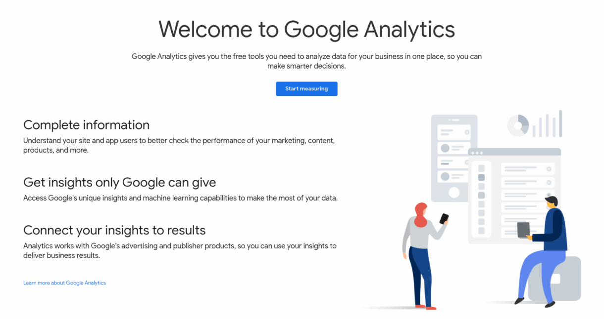
You have now used your Gmail/Google Account to sign up as a user of Google Analytics.
Creating a tracking ‘account’
After you have completed the sign-up steps in the previous section, Google Analytics displays a screen named Account setup.

The word ‘account’ on this screen:
DOES NOT refer to your Gmail/Google Account or an account with any other online service such as Facebook, Twitter or whatever.
IS USED to store the name of the 'business customer' who operates the website you want to track. For example, 'Joe's Pizzas', 'ABC Limited' or 'Castlebar Accountancy Services'.
The term ‘account’ is explained in more detail later in this Tutorial.
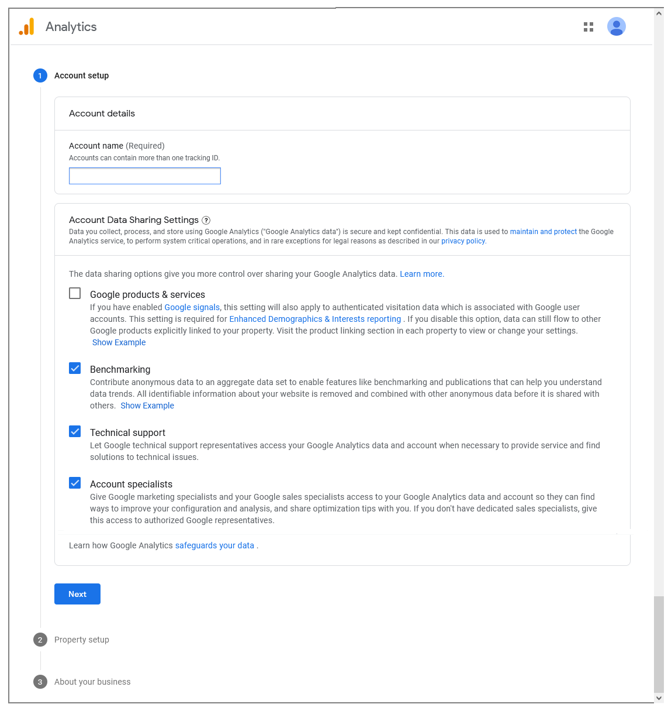Because you want to track your own personal website - or maybe a group of personal websites - enter 'My Personal Websites' or similar in the Account name box provided.

Next, check as many of the Data Sharing options further down this Account setup screen as you require.
When finished, click the Next button at the bottom of the screen.
Creating a tracking ‘property’
In Google Analytics, the term ‘property’ refers to a single tracked website (or mobile phone app). Every Google Analytics ‘property’ (that is, a website or mobile app) belongs to a Google Analytics ‘account’ (that is, a customer). Any one Google Analytics ‘account’ can contain up to 100 Google Analytics ‘properties’.
On the Property setup screen, enter the name you want to give to your website in Google Analytics. For example, 'My Personal Website on GitHub'.
Next, select your required timezone and currency.

When finished, click the Next button at the bottom of the screen.
Entering your business information
On the Business information screen, complete the online survey with appropriate details about the purpose of your website.
When finished, click the Create button at the bottom of the screen.
Accepting the Terms of Service
You are now shown a pop-up window inviting you to accept the Google Analytics Terms of Service. You must also, at the top of the window, select your Country.

Click the I accept button to continue.
Selecting your Platform
You can use Google Analytics to track either a website or a mobile phone app.
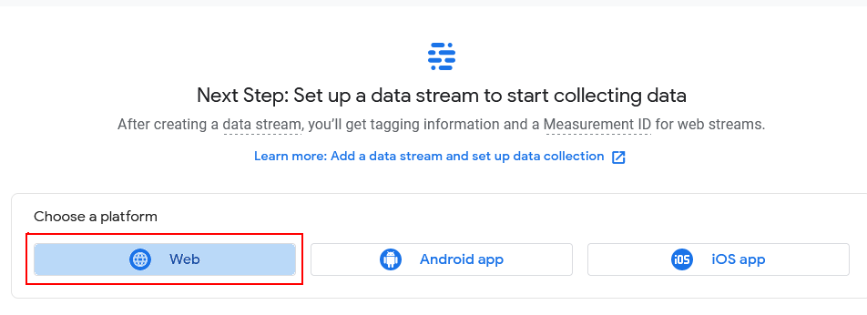On the next screen displayed, select the Web option to continue.
Creating your Data Stream
Your next task to set up the so-called 'data stream' for the ‘property’ (website) you want to track with Google Analytics.
Each Google Analytics ‘property’ can have up to 50 data streams, where each stream is a flow of data to Google Analytics from a website or mobile phone app.
You need to enter the following two items:
- Website URL: The exact web address of the website you want to track. URL (Uniform Resource Locator) is simply another term for web address and network protocol. Google Analytics can track a website only if you: Correctly select the network protocol (http:// or https://). It is unlikely you will ever want to select the http:// protocol. This older, insecure protocol should not be used on modern websites. – and – Correctly enter the website address (such as marysmith.github.io). Do not enter a forward slash (/) after the web address, or include the name of a folder within the address. For example, do not enter marysmith.github.io/ or marysmith.github.io/portfolio.
- Stream name: Typically, you will enter the Google Analytics ‘property’ name of the website here.

When finished, click the Create stream button at the bottom of the screen.
Copying your Google Tracking ID
You are now ready to view the unique Tracking ID for your website, and to copy-and-paste it to your web pages.
On the Web stream details screen, scroll down to the end and click the View Tag Instructions option.

On the Installtation instructions screen now displayed, click the Install manually tab.
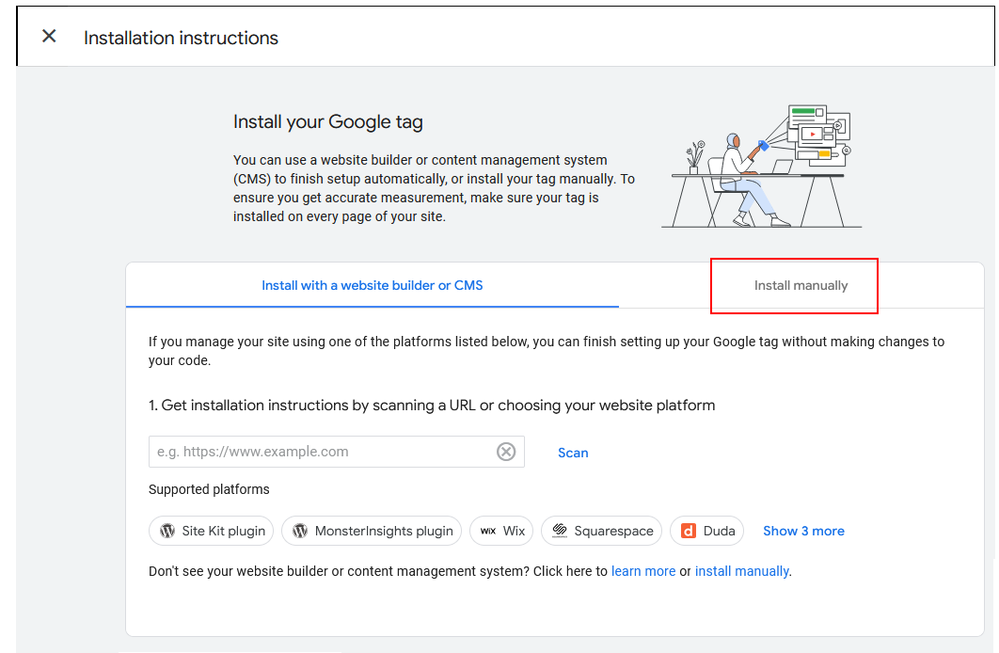Google Analytics now displays a snippet of JavaScript code that contains your unique Tracking ID.
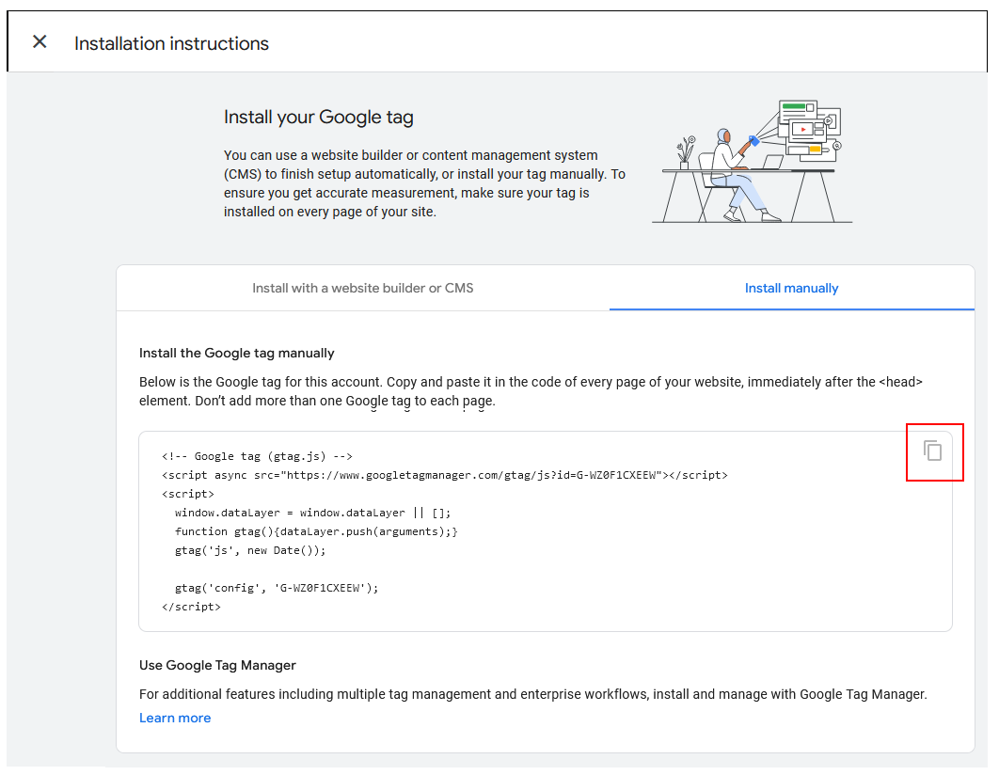Click the Copy icon at the right to copy this JavaScript code. You can then paste this into your web page or pages.

After you have obtained your Tracking ID, you can close the Installtation instructions flyout window and then the Web stream details window. To do so, click the Close (X) icon at the top-left of the windows.

At the left of the Google Analytics creen, click the Reports option.

In future, when you sign into Google Analytics, this is the screen you will want to view.
Pasting your Google Analytics Code into a web page
You will need to paste the Google Analytics Tracking Code with its unique Tracking ID into every web page on your website that you want to track.
- Copy the Tracking Code from Google Analytics – or from a web page that already contains it.
- In VS Code, open the web page into which you want to paste the Tracking Code.
- Typically, the Tracking Code is placed just before the closing </head> tag.
In your web page, click in that position, press ENTER once or twice to open a new line or two.
- And then paste the Google Analytics Tracking Code. 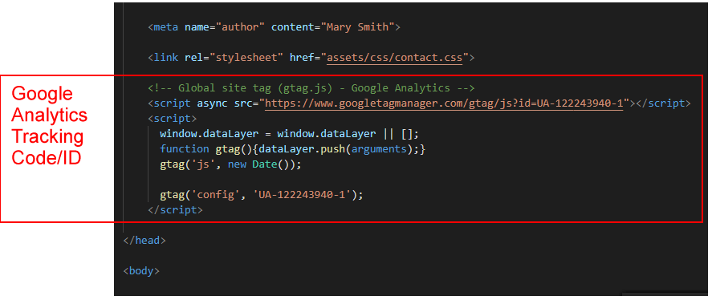
When finished, you will need to save your web pages and upload them to your website on the Internet. Google Analytics cannot track web pages that exist only on your local computer.
Testing that Google Analytics is tracking your web pages
Follow these steps to verify that the Google Analytics Tracking Code you have pasted into a web page or pages is working.
- After you have pasted the Tracking Code into a web page or pages, save the page(s), and upload them to your website on the Internet.
- In one tab of your web browser, display and reload the web page into which you have pasted the Google Analytics Tracking Code.
- In another browser tab, sign in to Google Analytics and click the orange icon at the top-left of the web page.
- Click the Reports icon under the main Google Analytics orange icon.
- From the list of options on the Reports drop-down menu, click Real-time.

You should then see a screen similar to the following.
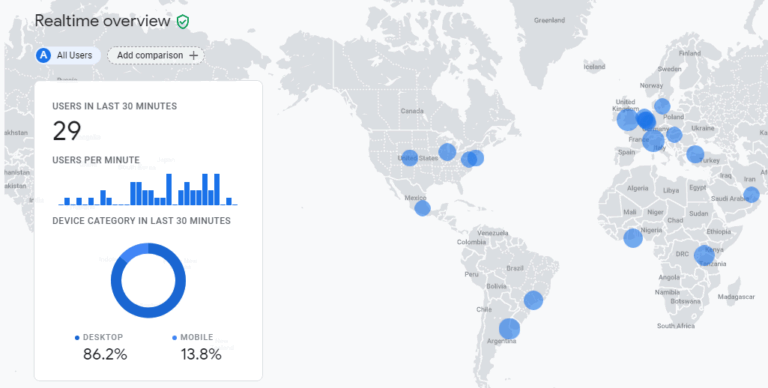Adding further websites to Google Analytics
After you have signed up to Google Analytics and added at least one website for tracking, here are the steps to track additional websites.
- Use your Gmail/Google Account to sign in to https://www.google.com/analytics.
- At the left of the Google Analytics home screen is a vertical menu of options. The last option is named Admin and has a gears icon beside it. Click this option.
- Your next step depends on whether you want to create a new Google Analytics ‘account’ to contain the new website you want to track. Or instead want to add that website as a new ‘property’ to a Google Analytics ‘account’ that already exists:
- New ‘account’: Typically, you will choose this option when you want to track a website for a new client. In the first (left) column, click the + Create Account button.
- Existing ‘account’: If the new website is for an existing client, and you have grouped together that client’s other websites within a Google Account, you will typically choose this option.
In the second column, select the relevant ‘account’ from the dropdown list.
 Click the + Create Property button.
Click the + Create Property button.
 And then click the Setup Assistant button.
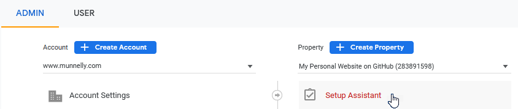
And then click the Setup Assistant button.
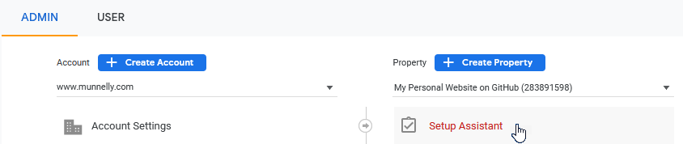
- Next, enter the details for the relevant website. If you have chosen to create a new Account, you will need to enter the account name. Complete the Terms of Service and, when finished, click the I Accept button. You are now shown the Google Analytics Tracking Code with the unique Tracking ID for your website.
- Click anywhere within the Tracking Code area of the screen, and then paste the code into your web page or pages.
Viewing a Google Analytics Tracking Code
Follow these steps to view a Google Tracking Code you created previously.
- Sign in to Google Analytics and, on your home screen, click the Admin menu option at the lower-left.
- On the Admin screen are two columns of options. From the right column, click Data Streams.

- On the next screen, click the Web option and then click on the name of the Data Stream.

- On the Data stream details screen, scroll down to the section with the heading of Tagging Instructions.
Click the drop-down arrow at the left of the option named Global site tag (gtag.js)
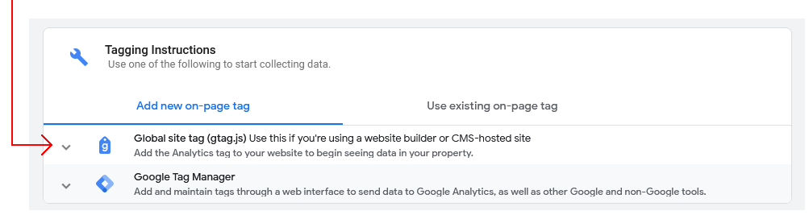
Google Analytics now displays a snippet of JavaScript code that contains your unique Tracking ID.
 Click the Copy icon at the right to copy this JavaScript code. You can then paste this into your web page or pages.
Click the Copy icon at the right to copy this JavaScript code. You can then paste this into your web page or pages.
- After you have obtained your Tracking Id, you can close the Web stream details flyout window. To do so, click the Close (X) icon at the top-left of the window.

Google Analytics: Accounts and Properties
To correctly set up and manage Google Analytics for several websites, it is important to understand the following key terms:
- Google Analytics Account
- Google Analytics Property
About Google Analytics Accounts
You sign in to Google Analytics with your Gmail/Google Account – a combination of an email address and password that gives you access to the online service. Once you have signed in, however, the word ‘Account’ you see on Google Analytics screens has a very different meaning.
Within Google Analytics, the word ‘Account’:
- Does not refer to the Gmail/Google Account you used to sign in.
- Does refer to the client for whom you are building websites.
When you build several websites with different web addresses for a single client, you can group these different websites together into one, convenient Google Account.
In other words, a Google Analytics Account is a group of tracked websites that share something in common. Typically, that common factor is that they were all created for the same client.
With a single Gmail/Google Account (email address/password), you sign up as a Google Analytics user, and then create up to 100 different Google Analytics Accounts – that is, 100 groups of tracked websites.
About Google Analytics Properties
In Google Analytics, a Property is a single tracked website (or mobile phone app). Every Google Analytics Property belongs to a Google Analytics Account, and any one Google Analytics Account can contain up to 50 Google Analytics Properties.
In summary, you can create 100 different Google Analytics Accounts, each one of which can contain 50 Properties. That means, with a single Gmail/Google Account, Google Analytics will allow you to track 100 x 50 = 500 different websites.
When you look at the unique Tracking ID within each Google Analytics Tracking Code, you can see that it consists of two parts, separated by a hyphen (-). In the example of UA-122243940-1, the 122243940 part is the Account number, and the 1 at the end is the Property number. The letters UA stand for Universal Analytics.
Working with multiple Google Accounts and Properties
Over time, as you build more websites and need to track their visitors, you have two choices in how you manage those websites in Google Analytics:
- One Google Account/Many Google Properties: One approach would be to use the same Account to contain all the websites you track, with each new website added as a Property to that Account. If you are building websites only for your employer or for one other organisation, this is the recommended way of organising Accounts and Properties. 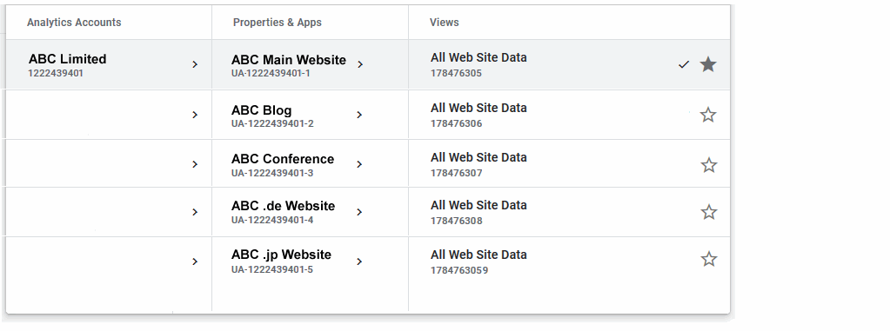
- One Google Account/One Google Property: Another approach would be, that for every new website you want to track, you create one new Account and one new Property. With this approach, you would probably give the same name to both the Account and the Property.
If you are building websites for different clients, this is the recommended way of organising Accounts and Properties.

As a general rule, it’s probably best to follow the simpler One Account/One Property structure unless there is a very good reason to group several Properties within a single Account. The most common such reason for grouping multiple websites would be that they are all created for the same client organisation.
Using multiple Gmail/Google Accounts with Google Analytics
If you have more than one Gmail/Google Account, it may happen that, over time, you use different Gmail/Google Accounts to work with Google Analytics.
For example:
- You have two Gmail/Google Analytics Accounts: marysmith@gmail.com and msmith99@gmail.com.
- For some websites, you set up Google Analytics tracking with the first Gmail/Google Account. For other websites, you use your second Gmail/Google Account.
Now, you sign in to Google Analytics as follows:
- You go to https://www.google.com/analytics
- You then click the Sign in to Analytics button on the welcome screen.

- You sign in with your Gmail/Google Account of marysmith@gmail.com.
- However, in Google Analytics, you notice that you can see web traffic data only for some of your websites – but not others. Why are some tracked websites missing?
When you sign in to Google Analytics as marysmith@gmail.com, you will see only those websites for which you set up tracking as marysmith@gmail.com. The likely reason some websites are missing is that you used your other Gmail/Google Account (msmith99@gmail.com) to set up Google Analytics tracking for them.
Within Google Analytics, you can view all your Gmail/Google Accounts, and switch between different ones, by clicking the user icon at the top-right of any Google Analytics screen, and then selecting the relevant Gmail/Google Account.

Sharing Google Analytics data with others
As a web designer/developer, you will often be the person who creates the Google Analytics Tracking Code for the websites you build. However, others will want to be able to view the web traffic information collected by Google Analytics. For example:
- Team colleagues in the marketing and IT departments of your organisation.
- External clients for whom you built websites.
Follow these steps to share Google Analytics data with one or more other people.
- Sign in to Google Analytics and, on your home screen, click the Admin menu option at the lower-left.
- On the next screen displayed you can see two columns of options. In the left column, click the Account Access Management option. 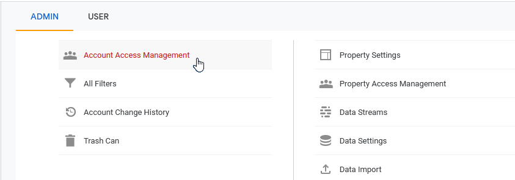
- On the next screen displayed, click the blue plus (+) icon at the top-right, and then select Add users.

- Enter the email address(es) of the people you want to share web traffic data with.
- Select the level of access you want to grant to others. This can include the ability for them to add further users. 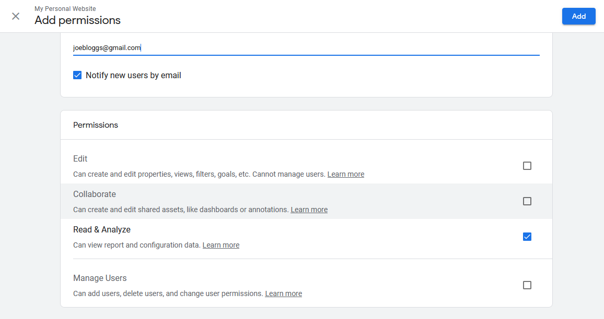
- When finished, click the Add button at the top-right of the screen.
You can also use this Account Access Management option on the Admin screen to remove Google Analytics sharing access from existing users or to vary their current access level.
Further resources
Get to Know Google Analytics 4: A Complete Guide
By Kayle Larkin at Search Engine Journal
Walkthrough of the Google Analytics 4 User Interface
From Google Analytics on YouTube.
Google Analytics 4 Tutorial – How to get started quickly with GA4
From Loves Data on YouTube.
Google Analytics for Beginners (free online course)
From Official Google Analytics Academy
Return to Contents.